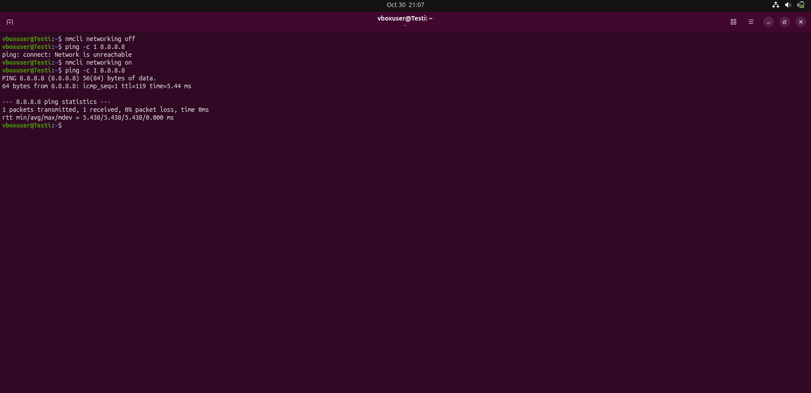
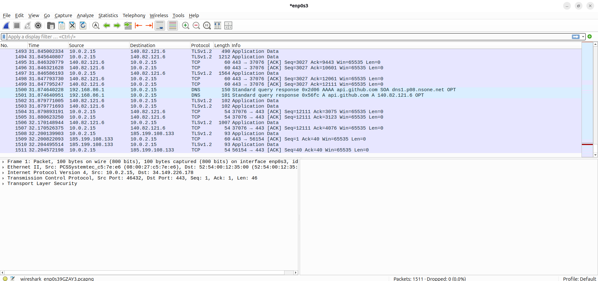
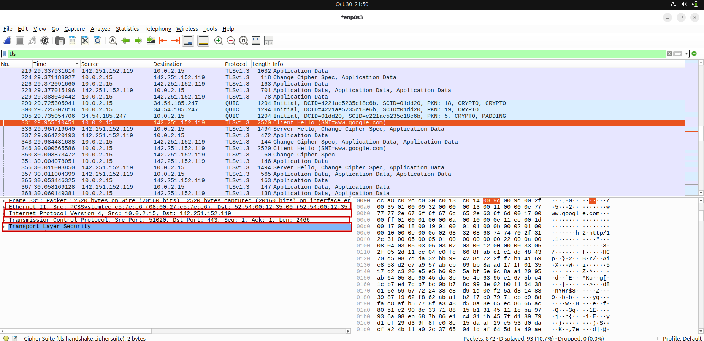

Ajoin komennon: nmcli networking off.
Sen jälkeen ajoin: ping -c 1 8.8.8.8. Lisäsin -c 1 flagin, koska muuten pingailu jatkuu loputtomiin, vaikka yhteyttä katkaistaessa sillä ei olekaan väliä.
Palautin yhteyden komennolla: nmcli networking on.

Ensin ajoin komennon: sudp apt update.
Sen jälkeen: sudo apt-get install wireshark. Asennus piti vahvistaa.
Kun käynnistin Wiresharkin, sain ilmoituksen, ettei minulla ole oikeutta siepata paketteja.
Ajoin komennon: dpkg-reconfigure wireshark-common. Komento piti ajaa vielä uudestaan juurikäyttäjänä.
Sen jälkeen lisäsin itseni Wireshark-ryhmään: sudo usermod -aG wireshark $USER.
Tämän jälkeen valitsin Wiresharkissa enp0s3 (oman virtuaalikoneeni verkkokortti) ja liikennettä alkoi näkyä.

Avasin selaimessa google.com-sivun ja sieppasin liikennettä Wiresharkilla. Avasin yhden TLS-paketin, jossa näkyi neljä kerrosta.
Peruskerros - Ethernet IIPeruskerros huolehtii tiedonsiirrosta paikallisessa verkossa. Se määrittää, miten tietokoneet voivat olla yhteydessä toisiinsa ohittamatta reititintä.
Kuljetuskerros - Transmission Control ProtocolKuljetuskerros vastaa tiedonsiirrosta joko samassa tai eri verkossa olevien tietokoneiden välillä. Se mahdollistaa sovellusten viestimisen toisilleen.
Sovelluskerros - Transport Layer SecuritySovelluskerros sisältää protokollia, jotka mahdollistavat palveluiden käytön. Esimerkkejä näistä ovat HTTP, FTP ja SMTP.
Verkkokerros - Internet Protocol Version 4Verkkokerroksen avulla eri verkot voivat olla yhteydessä toisiinsa tuntematta toistensa rakennetta. Toisien sanoen se mahdollistaa Internetin.
